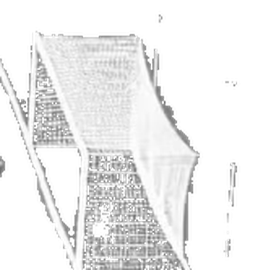

Comparison fixture only — nothing here is integrated. The sandbox still renders
procedural Goal V3. V2.1 status: PENDING_VISUAL_REVIEW (deterministic refinement,
0 generations — rear pole removed, net rebuilt as a connected perspective-aware mesh).

Original reference (isolated, grey-neutralized, 312×332)